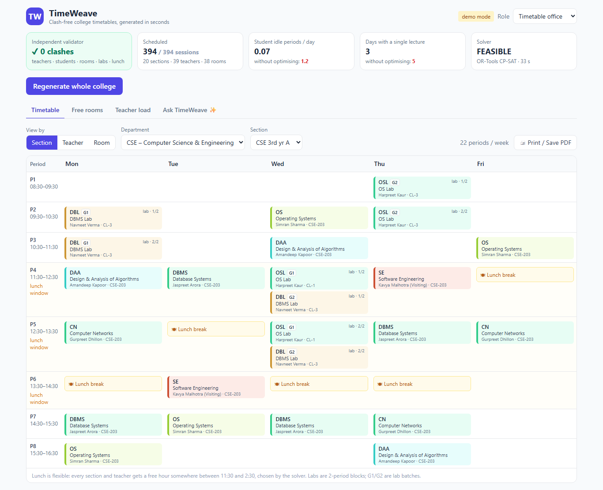

Problem: college timetables are built by hand over weeks. They still clash, leave students waiting hours between lectures, and break whenever one class moves. Built today: a working prototype. It generates the whole college's timetable with Google OR-Tools CP-SAT, proves it clash-free with an independent validator, and shows it on desktop and phone, with a free-room finder, dashboards, an AI assistant and PDF printouts.

Stack: Python, FastAPI, Google OR-Tools CP-SAT, Tailwind + Alpine.js (one page, phone-first), Claude API, pytest, git.
| Day 2 real data | Excel/CSV upload with row-level errors · check an existing hand-made timetable · drag-and-drop editor with live clash warnings · versions, rollback and audit log · Excel export |
| Day 3 daily operations | Teacher leave → ranked substitutes → coordinator confirms · student "Today" view · free rooms that account for bookings · Google login with roles · calendar feed |
| Day 4 submission | Minimal-change repair with a preview · chatbot proposes, a person confirms · "why no timetable" explanations · room QR pages · deploy |
pip install -r requirements.txt → uvicorn app.main:app --port 8000 → open localhost:8000Full plan: PLAN.md